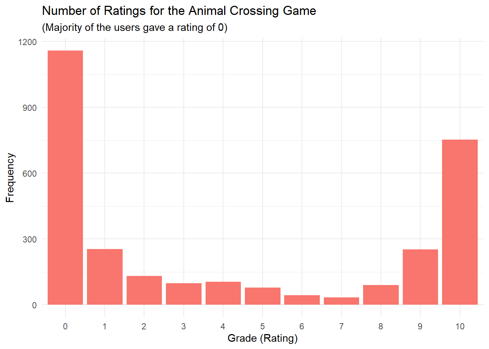

library(tidyverse)
library(tidymodels)
library(keras)Animal Crossing Game Sentiment Analysis
This project focuses on building a sentiment analysis model to predict user ratings for the popular game Animal Crossing based on user reviews. It employs a deep learning approach using a Long Short-Term Memory (LSTM) network, a type of recurrent neural network (RNN) designed to process sequential data effectively.
LSTMs are particularly well-suited for text-based tasks due to their ability to handle long sequences of words or characters while capturing dependencies within the text. Their feedback loops and memory cells enable them to learn to “remember” and “forget” information, making them powerful for modeling linguistic structures.
Given the limited size of the dataset (2999 rows), cross-validation with multiple folds will be used to reliably assess the model’s performance while minimizing overfitting. After identifying the optimal hyperparameters, a final model will be trained on the complete training set and evaluated on the test set to measure its predictive accuracy.
# Load data
user_reviews <- read_tsv("user_reviews.tsv")
glimpse(user_reviews)Rows: 2,999
Columns: 4
$ grade <dbl> 4, 5, 0, 0, 0, 0, 0, 0, 0, 0, 1, 0, 0, 0, 0, 0, 0, 0, 0, 0, …
$ user_name <chr> "mds27272", "lolo2178", "Roachant", "Houndf", "ProfessorFox"…
$ text <chr> "My gf started playing before me. No option to create my own…
$ date <date> 2020-03-20, 2020-03-20, 2020-03-20, 2020-03-20, 2020-03-20,…Exploratory Analysis
user_reviews %>%
count(user_name, text) # There are 2999 distinct users, with each user giving one review# A tibble: 2,999 × 3
user_name text n
<chr> <chr> <int>
1 000PLAYER000 Cant stop playing! 1
2 000anon2759 one island per console. greedy and unfair, an anti-consum… 1
3 11_11 Both me and my little sister were excited for this game a… 1
4 12hwilso Would be good, but only allows one island per console. Ev… 1
5 1mooey Fantastic game and fun to play. Although you can’t have m… 1
6 24ths It’s sh*t that you can’t have your own island if you shar… 1
7 3nd3r02 Even though the game itself is great and as gorgeous and … 1
8 425_Flex Just like every other recent reviewer giving it a negativ… 1
9 486eHyMy We need equal values and opportunities for all players on… 1
10 4Plants Finally an animal Crossing where we can put our leave dow… 1
# ℹ 2,989 more rowsuser_reviews %>%
summarize(avg_grade = mean(grade)) # The average rating given = 4.22# A tibble: 1 × 1
avg_grade
<dbl>
1 4.22# User Ratings
user_reviews %>%
count(grade) %>%
ggplot(aes(factor(grade), n)) +
geom_col(aes(fill = "firebrick")) +
theme_minimal() +
theme(legend.position = "none") +
labs(
title = "Number of Ratings for the Animal Crossing Game",
subtitle = "(Majority of the users gave a rating of 0)",
x = "Grade (Rating)",
y = "Frequency"
)
# Majority of the users gave a rating of 0, closely followed by 10, 1 and 9# Character lengths of the reviews
user_reviews %>%
ggplot(aes(nchar(text))) +
geom_histogram(alpha = 0.7, fill = "firebrick") +
scale_x_log10() +
labs(
x = "Number of characters per review",
y = "Number of reviews"
)`stat_bin()` using `bins = 30`. Pick better value with `binwidth`.# The distribution appears odd, the data has two thresholds. Nearly half of the reviews have a character length < 400 while the other half have a character length > 800# Diving deeper into the data to check if there's a reason behind the odd distribution
user_reviews %>%
filter(nchar(text) < 400) %>%
sample_n(5) %>%
pull(text)[1] "I spent 60 e on the game and also had to buy a memory card to be able to download it. Now it turned out that only one profile can own an island and others are just guests. So now I have one happy kid and one sad. I’m very disappointed at Nintendo. They better fix it. It’s 2020 – there surely aren’t any technical restrictions preventing each profile from having an own island."
[2] "Animal Crossing is a fun and Relaxing game. My wife and I have enjoyed playinh it together and apart. It's always fun to meet quirky neighbors or to go and explore the world."
[3] "Local multiplayer and one island per console just shows how greedy Nintendo has become."
[4] "Really, an amazing game! This is my first Animal Crossing game and I am enjoying it so much! The one island per console thing is a bit of a bummer but I guess that's just how Animal Crossing always has been. Loving the cute and colorful graphics! The sound design is great, as well. It feels like you are really on a deserted island getaway. Overall, great game! Must-buy!"
[5] "The game is amazing. Ignore the whiney little babies crying about islands and rating it 0. Sure, it would be nice to be able to have multiple islands, but this doesn't make an amazing game 0/10. They are idiots. The game is great." # Majority of the reviews with less than 500 characters appear coherent, some even end with full stops
user_reviews %>%
filter(nchar(text) >= 800) %>%
sample_n(5) %>%
pull(text)[1] "I'd like to get into the meat of the game, but I can't get past the extremely stupid decision to limit one island per Switch. PER SWITCH. I haven't gotten into an Animal Crossing game since the GameCube version, which didn't have this limitation. It's typical Nintendo; for anything they do right, they have to do something wrong to balance it out.If you plan on only playing one-player,I'd like to get into the meat of the game, but I can't get past the extremely stupid decision to limit one island per Switch. PER SWITCH. I haven't gotten into an Animal Crossing game since the GameCube version, which didn't have this limitation. It's typical Nintendo; for anything they do right, they have to do something wrong to balance it out.If you plan on only playing one-player, you're probably fine. But for anyone in a household with one Switch and multiple players, you're in for a bad time.… Expand"
[2] "The game itself is very relaxing and fun to play, and has load of customization. if you plan to play solo, I highly recommend it.My complaints arise when it comes to multiple people playing. I think that the decision to have one island per console, to build the community with those you play with would be understandable... IF other players had the same influence as the main player.The game itself is very relaxing and fun to play, and has load of customization. if you plan to play solo, I highly recommend it.My complaints arise when it comes to multiple people playing. I think that the decision to have one island per console, to build the community with those you play with would be understandable... IF other players had the same influence as the main player.It is understandable to not want certain people to be able to modify the island, but it isn't an option to choose, extra players past the first are automatically restricted in what they can do. It seems like it should be simple to give the main player the choice of allowing others the same management privileges as they have.In addition, recipes obtained through the storyline have no reason to NOT be mailed to the other players. It's silly and needs to be changed. Crafting is shown as a big focus, and losing a LOT of customization options for absolutely no good reason is ridiculous.… Expand"
[3] "-no cooking-almost no interactions with furniture (ex: you can't play the guitar or watch tv, they are just there)-1 island per switch-incredibly bad co-op-item durabilityEverything is there to prolong your game time and sell more Swtiches. No depth or mechanics, only shallow visuals.If you're not after collecting animals for your island like Pokemon, you'd be better off-no cooking-almost no interactions with furniture (ex: you can't play the guitar or watch tv, they are just there)-1 island per switch-incredibly bad co-op-item durabilityEverything is there to prolong your game time and sell more Swtiches. No depth or mechanics, only shallow visuals.If you're not after collecting animals for your island like Pokemon, you'd be better off playing Stardew Valley. If this was not a Nintendo title critics would rate it 6/10.… Expand"
[4] "I NEVER play games, I just have alot of other hobbies. My bf convinced me to buy it together since we could play together. Turns out since im the 2nd player that theres a whole lot of stuff I can't do as a 2nd player which makes it way less exciting to play.I hope they will fix it, because the game overall seems fun and I did put in half of the money! I think thats the case for a lot ofI NEVER play games, I just have alot of other hobbies. My bf convinced me to buy it together since we could play together. Turns out since im the 2nd player that theres a whole lot of stuff I can't do as a 2nd player which makes it way less exciting to play.I hope they will fix it, because the game overall seems fun and I did put in half of the money! I think thats the case for a lot of people who bought this together.… Expand"
[5] "It seems all the negative reviews are about the fact that you can only have one island per system, regardless of how many users there are. If this isn't a problem then you, like me, will absolutely love this game. It's Animal Crossing - on the Switch. Things from the older games have been streamlined but it feels different enough to be a worthy sequel.The game looks gorgeous, theIt seems all the negative reviews are about the fact that you can only have one island per system, regardless of how many users there are. If this isn't a problem then you, like me, will absolutely love this game. It's Animal Crossing - on the Switch. Things from the older games have been streamlined but it feels different enough to be a worthy sequel.The game looks gorgeous, the character customisation is at a series high, the villagers seem more alive than ever before, the progression is satisfying (albeit slow in the first few days), and all in all, the game is just fantastic. I'll be playing it for years, for sure.… Expand" # Reviews with more than 800 characters also appear coherent.Data Preparation
# The data contains 11 different ratings (from 0 to 10). Since the data has an odd distribution which makes it difficult to fit regression models, the ratings are converted to two classes (Bad reviews when the rating <= 6 and Good reviews when the rating > 6)
set.seed(456)
reviews <- user_reviews %>%
mutate(
text = str_remove(text, "Expand$"),
rating = if_else(grade > 6, 1, 0) # Good (1) and Bad (0)
)library(tokenizers)
library(textrecipes)
library(tidytext)
# Number of words per review
p <- user_reviews %>%
mutate(n_words = count_words(text)) %>%
filter(n_words > 10) %>%
ggplot(aes(n_words)) +
geom_histogram(fill = "firebrick", color = "white") +
scale_x_continuous(breaks = c(0, 100, 200, 300, 400, 500, 600, 700, 800), limits = c(10, 750)) +
labs(x = "Number of words per campaign blurb",
y = "Number of campaign blurbs")
plotly::ggplotly(p)# Reviews with less than 10 words are removed since most of them are incomplete sentences
# The histogram indicates majority of the reviews have between 25 - 230 words# Most common words
most_common_words <- user_reviews %>%
unnest_tokens(word, text) %>%
count(word, sort = TRUE) %>% # stop words are the most common words
anti_join(stop_words) %>%
slice_max(n, n = 800) # After removal of stop words, the most common words are game, island, switch,play and playerJoining with `by = join_by(word)`# I retain only the top 800 words since the user reviews data set doesn't contain a big word vocabulary, this is to avoid a highly sparse matrix during model building
most_common_words# A tibble: 815 × 2
word n
<chr> <int>
1 game 8769
2 island 3974
3 switch 2214
4 play 2176
5 player 1844
6 nintendo 1695
7 console 1489
8 expand 1393
9 crossing 1371
10 animal 1369
# ℹ 805 more rowsmost_common_words %>%
arrange(n)# A tibble: 815 × 2
word n
<chr> <int>
1 blast 24
2 brand 24
3 bunch 24
4 business 24
5 classic 24
6 clothing 24
7 cosas 24
8 creativity 24
9 eventually 24
10 experiences 24
# ℹ 805 more rowsModel Definition
max_words <- 800
max_length <- 200
output_dim <- 16
set.seed(456)
reviews <- reviews %>%
mutate(n_words = count_words(text)) %>%
filter(n_words > 10)
# Data splitting
review_splits <- initial_split(reviews, strata = rating)
review_train <- training(review_splits)
review_test <- testing(review_splits)# Recipe
reviews_rec <- recipe(~ text, data = review_train) %>%
step_tokenize(text) %>%
step_stopwords(text) %>%
step_tokenfilter(text, max_tokens = max_words) %>%
step_sequence_onehot(text, sequence_length = max_length)
# Prep the recipe
reviews_prep <- prep(reviews_rec)# Cross validation folds
set.seed(456)
review_folds <- vfold_cv(review_train, v = 5, strata = rating)# Preprocessing and model fitting function
fit_split <- function(split, prepped_rec) {
x_train <- bake(prepped_rec, new_data = analysis(split), composition = "matrix")
x_val <- bake(prepped_rec, new_data = assessment(split), composition = "matrix")
# Get outcomes
y_train <- analysis(split) %>% pull(rating)
y_val <- assessment(split) %>% pull(rating)
# Create and compile model
model <- keras_model_sequential() %>%
layer_embedding(input_dim = max_words + 1, output_dim = output_dim) %>%
bidirectional(
layer_lstm(units = 16, dropout = 0.5, recurrent_dropout = 0.5)
) %>%
layer_dense(units = 1, activation = "sigmoid") %>%
compile(
optimizer = "adam",
loss = "binary_crossentropy",
metrics = c("accuracy")
)
# Fit model
history <- model %>% fit(
x_train, y_train,
epochs = 15,
validation_data = list(x_val, y_val),
batch_size = 64,
verbose = FALSE
)
# Get predictions
val_pred <- predict(model, x_val)
val_pred_class <- ifelse(val_pred > 0.5, 1, 0)
# Calculate metrics
accuracy <- mean(val_pred_class == y_val)
precision <- sum(val_pred_class == 1 & y_val == 1) / sum(val_pred_class == 1)
recall <- sum(val_pred_class == 1 & y_val == 1) / sum(y_val == 1)
f1 <- 2 * (precision * recall) / (precision + recall)
# Return metrics
tibble(
accuracy = accuracy,
precision = precision,
recall = recall,
f1_score = f1
)
}# Apply cross-validation using map()
cv_results <- review_folds %>%
mutate(
metrics = map(splits, fit_split, reviews_prep))15/15 - 2s - 2s/epoch - 110ms/step
14/14 - 2s - 2s/epoch - 157ms/step
14/14 - 1s - 1s/epoch - 105ms/step
14/14 - 1s - 1s/epoch - 106ms/step
14/14 - 1s - 1s/epoch - 105ms/stepcv_results %>%
unnest(metrics)# A tibble: 5 × 6
splits id accuracy precision recall f1_score
<list> <chr> <dbl> <dbl> <dbl> <dbl>
1 <split [1788/449]> Fold1 0.884 0.877 0.805 0.840
2 <split [1790/447]> Fold2 0.872 0.821 0.845 0.833
3 <split [1790/447]> Fold3 0.879 0.828 0.857 0.842
4 <split [1790/447]> Fold4 0.859 0.8 0.833 0.816
5 <split [1790/447]> Fold5 0.893 0.857 0.857 0.857cv_results %>%
unnest(metrics) %>%
summarize(
avg_accuracy = mean(accuracy)
)# A tibble: 1 × 1
avg_accuracy
<dbl>
1 0.878The cross validation folds have an average accuracy = 87.17%.
Final Model
review_baked <- bake(reviews_prep, new_data = NULL, composition = "matrix")
final_model <- keras_model_sequential() %>%
layer_embedding(input_dim = max_words + 1, output_dim = output_dim) %>%
bidirectional(
layer_lstm(units = 16, dropout = 0.5, recurrent_dropout = 0.5)
) %>%
layer_dense(units = 1, activation = "sigmoid") %>%
compile(
optimizer = "adam",
loss = "binary_crossentropy",
metrics = c("accuracy")
)
# Fit the model
history <- final_model %>% fit(
review_baked,
review_train$rating,
epochs = 15,
batch_size = 64,
verbose = FALSE
)
history
Final epoch (plot to see history):
loss: 0.1618
accuracy: 0.9405 plot(history)The final model achieves impressive results: Loss = 0.1713 and accuracy = 93.93%.
Model Evaluation
# Evaluate model on test set
test_baked <- bake(reviews_prep, new_data = review_test, composition = "matrix")
mod_evaluation <- evaluate(final_model,
x = test_baked,
y = review_test$rating)24/24 - 2s - loss: 0.3129 - accuracy: 0.8809 - 2s/epoch - 96ms/stepmod_evaluation loss accuracy
0.3128828 0.8808568 The performance on the test set indicates that the model achieved a loss of 0.2963 and an accuracy of 88.62%, which is slightly lower than the training performance (loss: 0.1713, accuracy: 93.92%). This gap suggests the model generalizes well to unseen data, but there may still be some overfitting or room for improvement in capturing the nuances of the test set.
The results are promising given the small dataset size (2999 rows) and highlight the effectiveness of using LSTMs for sentiment analysis.
Predictions
test_pred <- predict(final_model, test_baked)24/24 - 2s - 2s/epoch - 84ms/steptest_pred_class <- ifelse(test_pred > 0.5, 1, 0)
# Calculate final test metrics
test_metrics <- tibble(
accuracy = mean(test_pred_class == review_test$rating),
precision = sum(test_pred_class == 1 & review_test$rating == 1) / sum(test_pred_class == 1),
recall = sum(test_pred_class == 1 & review_test$rating == 1) / sum(review_test$rating == 1),
f1_score = 2 * (precision * recall) / (precision + recall)
)
test_metrics# A tibble: 1 × 4
accuracy precision recall f1_score
<dbl> <dbl> <dbl> <dbl>
1 0.881 0.853 0.826 0.839# Confusion matrix
conf_mat <- table(Predicted = test_pred_class, Actual = review_test$rating)
conf_mat Actual
Predicted 0 1
0 426 49
1 40 232From the confusion matrix:
The model correctly identified 239 good reviews (True Positives).
The model correctly identified 423 bad reviews (True Negatives).
The model incorrectly classified 43 bad reviews as good reviews (False Positives).
The model incorrectly classified 42 good reviews as bad reviews (False Negatives).